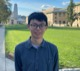
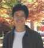

Swarun Kumar
Sathaye Family Foundation Professor, Electrical and Computer Engineering
Carnegie Mellon University
Affiliate: CS Department • HCI Institute • CyLab
I am the Sathaye Family Foundation Professor at Carnegie Mellon University’s ECE department, with affiliate appointments in the CS department, the HCI Institute, and CyLab. My research builds next-generation wireless systems spanning sensing, actuation, connectivity, and intelligence. I lead the Emerging Wireless Technologies (WiTech) Lab at CMU. I am a recipient of the 2024 ACM SIGMOBILE Rockstar Award, the 2021 SIGBED Early Career Researcher Award, the NSF CAREER Award, and the Google Faculty Research Award. I received the George Sprowls Award for best Ph.D. thesis in Computer Science at MIT and the President of India Gold Medal at IIT Madras.
NEWS
| 1/26 | Two papers at ACM SenSys on texture and health sensing with mmWave radar |
| 11/25 | Papers on acoustic sensing at CHI and UbiComp |
| 9/25 | Thank you IIT Madras for the Young Alumni Award |
| 6/25 | Our paper on wireless soft robots appeared at Nature Communications |
| 9/24 | Thank you ACM SIGMOBILE for the 2024 SIGMOBILE Rockstar Award |
| 8/24 | Two accepted papers at ACM MobiCom 2024 |
| 7/23 | Jingxian Wang receives the 2023 ACM SIGMOBILE Doctoral Dissertation Award |
| 4/23 | Two papers at MobiCom’23 on wireless actuation and spectrum sensing |
| 3/23 | Two papers at ICRA’23 on soft robots and mmWave sensing |
| 2/23 | Paper at IPSN’23 on mmWave structural sensing |
| 9/22 | Paper on fast RFID localization accepted at UbiComp’22 |
| 5/22 | Two papers at IPSN’22: Milton and SelfieStick |
| 5/22 | Two papers at CHI’22 on privacy behavior and lean privacy review |
| 4/22 | Paper on powerline backscatter accepted at NSDI’22 |
| 9/21 | Swarun Kumar receives the CMU-CIT Dean’s Early Career Fellowship |
| 5/21 | Our work on NFC Textiles wins Best Paper at IPSN 2021 |
| 4/21 | Thank you ACM SIGBED for the 2021 SIGBED Early Career Researcher Award |
SELECTED RECENT PUBLICATIONS
 | Pneumatically-Actuated Liquid Metal-Based Frequency Reconfigurable Antenna, Yiwen Song, Aditya Bharambe, Dinesh K Patel, Barbara Zhuo, Mason Zadan, Carmel Majidi and Swarun Kumar, Advanced Science 2026 PAPERWEBSITE |
 | SonicSieve: Bringing Directional Speech Extraction to Smartphones Using Acoustic Microstructures, Kuang Yuan, Yifeng Wang, Xiyuxing Zhang, Chengyi Shen, Swarun Kumar, and Justin Chan, CHI 2026 WEBSITE |
 | GigaFlex: Contactless Monitoring of Muscle Vibrations During Exercise with a Chaos-Inspired Radar, Jiangyifei Zhu, Yuzhe Wang, Tao Qiang, Vu Phan, Zhixiong Li, Evy Meinders, Eni Halilaj, Justin Chan and Swarun Kumar, SenSys 2026 WEBSITE |
 | Surface Material and Roughness Sensing using mmWave via Surface Scattering and Ambient Vibrations, Yawen Liu, Bert Shan and Swarun Kumar, SenSys 2026 WEBSITE |
 | TranQuiL: Long Range Detection and Localization of RFI in Radio Quiet Zones, Atul Bansal, Mohamed Ibrahim, Kuang Yuan, Yiwen Song, Swarun Kumar and Bob Iannucci, Radio Science 2026 PAPERWEBSITE |
 | WindDancer: Understanding Acoustic Sensing under Ambient Airflow, Kuang Yuan, Dong Li, Hao Zhou, Zhehao Li, Lili Qiu, Swarun Kumar and Jie Xiong, IMWUT 2025 PAPERWEBSITE |
 | DeWinder: Single-Channel Wind Noise Reduction using Ultrasound Sensing, Kuang Yuan, Shuo Han, Swarun Kumar and Bhiksha Raj, InterSpeech 2024 PAPERWEBSITE |
 | Shape-programming Robotic Reflectors for Wireless Networks, Yawen Liu, Akarsh Prabhakara, Jiangyifei Zhu, Shenyi Qiao, Swarun Kumar, ICRA 2025 PAPERWEBSITE |
 | Frequency-selective actuation of liquid crystalline elastomer actuators with radio-frequency, Yiwen Song, Zefang Li, Mason Zadan, Jingxian Wang, Swarun Kumar, Carmel Majidi, Nature Communications 2025 PAPERWEBSITE |
 | Thermo-Mechanically Stable, Liquid Metal Embedded Soft Materials for High-Temperature Applications, Robert Herbert, Piotr Mocny, Yuqi Zhao, Ting-Chih Lin, Junbo Zhang, Michael Vinciguerra, Sunny Surprenant, Wui Yarn Daphne Chan, Swarun Kumar, Michael R. Bockstaller, Krzysztof Matyjaszewski, Carmel Majidi, Advanced Functional Materials 2024 PAPERWEBSITE |
| Reinforcement learning-based framework for whale rendezvous via autonomous sensing robots, Nishant Mehrotra, Divyanshu Pandey, Ashutosh Sabharwal, Akarsh Prabhakara, Yawen Liu and Swarun Kumar, Science Robotics 2024 PAPERWEBSITE | |
 | Hydra: Exploiting Multi-Bounce Scattering for Beyond-Field-of-View mmWave Radar, Nishant Mehrotra, Divyanshu Pandey, Ashutosh Sabharwal, Akarsh Prabhakara, Yawen Liu and Swarun Kumar, MobiCom 2024 PAPERWEBSITE |
 | Guiding Energy Distribution inside Microwave Oven, Yiwen Song, Swarun Kumar, Hao Pan, Longyuan Ge, Yi-Chao Chen, and Lili Qiu, MobiCom 2024 PAPERWEBSITE |
 | ToMoBrush: Exploring Dental Health Sensing using a Sonic Toothbrush, Kuang Yuan, Mohamed Ibrahim, Yiwen Song, Guoxiang Deng, Robert A. Nerone, Suvendra Vijayan, Akshay Gadre, and Swarun Kumar, UbiComp 2024 PAPERWEBSITE |
 | A Roadmap for the Democratization of Space-Based Communications, Veronica Muriga, Swarun Kumar, Akshitha Sriraman and Assane Gueye, HotNets 2024 PAPERWEBSITE |
 | Towards Ubiquitous IoT through Long Range Wireless Energy Harvesting, Mohamed Ibrahim, Atul Bansal, Kuang Yuan, Junbo Zhang, and Swarun Kumar, MobiHoc 2024 PAPERWEBSITE |
 | TranQuiL: Long Range Detection and Localization of RFI in Radio Quiet Zones, Atul Bansal, Mohamed Ibrahim, Kuang Yuan, Yiwen Song, Swarun Kumar and Bob Iannucci, RFI (Oral) 2024 WEBSITE |
 | Adapting LoRa Ground Stations for Low-latency Imaging and Inference from LoRa-enabled CubeSats, Akshay Gadre, Zachary Machester, and Swarun Kumar, ACM ToSN 2024 PAPERWEBSITE |
TEACHING
- 18-213/613 — Computer Systems (Fall 2021, Spring 2022–present)
- 18-441/741 — Computer Networks (Spring 2018–21, Fall 2022–present)
- 18-859G — Wireless Networks and Mobile Systems, DARPA SC2 Edition (Fall 2017–19)
- 18-345 — Introduction to Telecommunication Networks (Spring 2017)
- 18-859F — Wireless Networks and Mobile Computing (Spring 2016)
Ph.D. STUDENTS

Yiwen Song- Kuang Yuan
- Yawen Liu
- Veronica Muriga (co-advised with Prof. Akshitha Sriraman and Prof. Assane Gueye)
- Jiangyifei Zhu (co-advised with Prof. Justin Chan)

Freddy Liu (co-advised with Prof. Justin Chan)
Ph.D. ALUMNI
- 2025Akarsh Prabhakara (co-advised with Prof. Anthony Rowe) → Assistant Professor, UW-Madison
- 2024Junbo Zhang → Apple
- 2024Atul Bansal (co-advised with Prof. Bob Iannucci) → Apple
- 2023Vaibhav Singh (co-advised with Prof. Osman Yağan) → Apple
- 2022Jingxian Wang → Microsoft Research, then Assistant Professor, NUS
- 2022Haojian Jin (co-advised with Prof. Jason Hong) → Assistant Professor, UC San Diego
- 2022Akshay Gadre → Assistant Professor, University of Washington
- 2021Diana Zhang → Johns Hopkins University Applied Physics Lab
POSTDOCTORAL ALUMNI
- Mohamed Ibrahim Ahmed → HP Labs